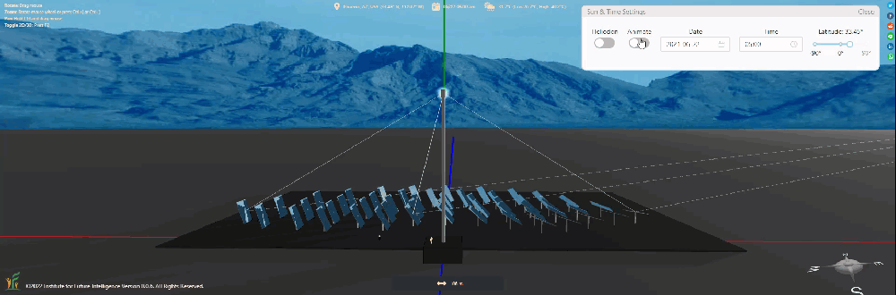
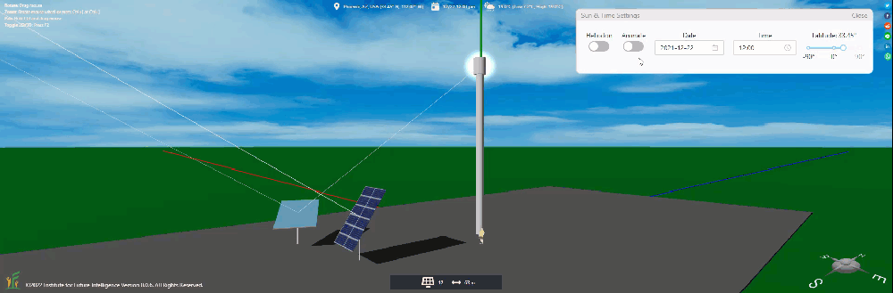
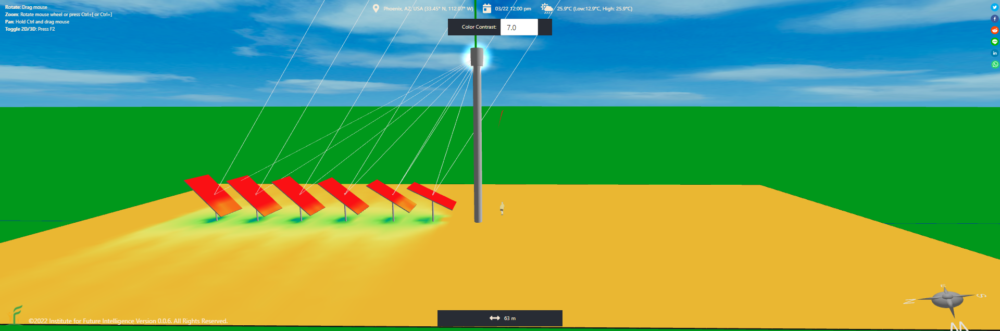
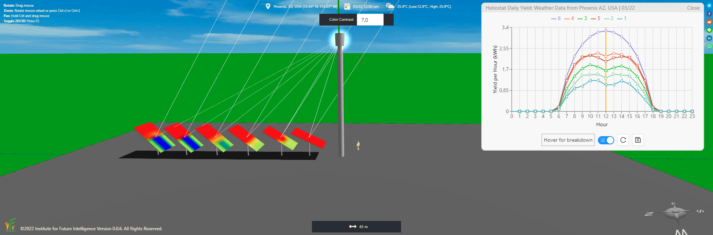
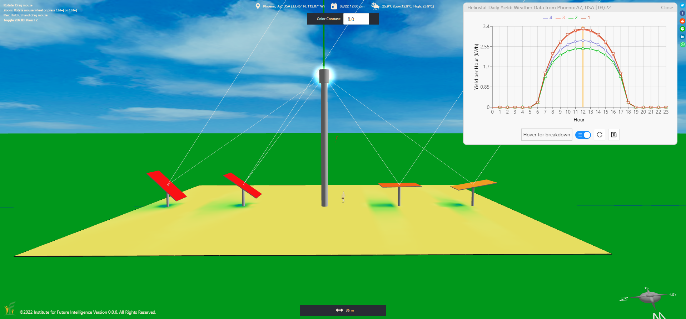
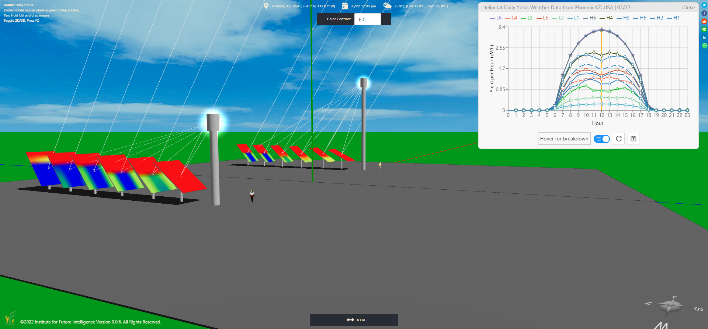

Modeling and Designing Solar Power Towers in Aladdin
How Aladdin simulates heliostats, shadowing, blocking, cosine efficiency, and tower height for concentrated solar power design.
Aladdin can be used to design both photovoltaic and concentrated solar power. In this article, I will show you how you can model a type of concentrated solar power (CSP) plant — solar power towers. An Aladdin model of the PS10 solar power tower, surrounded by more than 600 mirrors controlled by computers to follow the sun — called heliostats, is embedded as follows for you to see how such a CSP plant looks like. The mirror surface of each heliostat of the PS10 solar power plant has the size of 120 m2 — almost the size of a house!
In a way, a solar power tower plant is a gigantic Fresnel lens formed by many discrete heliostats. The design of a solar power tower involves deciding the positions of those heliostats, among other things (note that we do not currently cover the design of molten salt storage, though we will support it in the future as part of our storage simulations). Let's examine some of the design factors as follows.
Animating the movement of heliostats
A heliostat usually follows the sun throughout the day using a dual-axis tracker such that it reflects sunlight from its mirror to a central receiver installed at the top of a tower, as illustrated below.

Note that, however, the tracking mechanism of a heliostat differs from the alt-azimuth dual-axis tracker (AADAT) typically used for PV solar panels in that the former aims to reflect sunlight to a central receiver and the latter aims to receive most direct sunlight for each solar panel. Hence, a heliostat never faces the sun directly whereas a solar panel driven by an AADAT tracker always faces the sun directly. A comparison of their motions is shown in the following animation.

Shadowing and blocking effects
Unlike the design of PV solar panel arrays in which we only need to consider the shadowing among solar panels, in the design of the heliostat layout for a solar power tower, we also need to make sure that the mirrors of the heliostats do not block the light reflected by others from reaching the central receiver. The following two images show the differences in the heatmaps of the heliostats without and with showing blocking losses.


The cosine efficiency
If a solar power tower is in the northern hemisphere, a heliostat to the south of the tower reflects less light than a heliostat to the north of the tower. Since this difference is due to the projection effect, this factor is also referred to as the cosine efficiency. The following image illustrates this concept.

The effect of tower height
If you are wondering why the central receiver is installed at the top of a tall tower, the following image provides a visual explanation — the blocking effect is less severe when the tower is taller. This is the reason why a speaker needs to stand up higher so that he or she can be seen by the whole crowd.

Concluding remarks
While large-scale solar power tower plants face a bleak future, smaller plants such as Heliogen may still be useful in providing clean process heat.
← Back to Aladdin